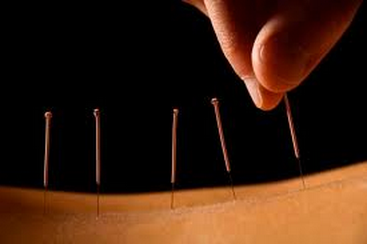

Ici se situera plus tard un flux rss
Les acupuncteurs du dimanche vous souhaitent la bienvenue sur leur site. Vous pourrez consulter ici les différentes pathologies liées au déséquilibre de vos méridiens et les symptomes associés.
L'acupuncture est l'une des cinq branches de la Médecine traditionnelle chinoise. Elle se base sur une approche énergétique et holistique. Selon la pensée médicale orientale, elle agit sur le Qi (prononcer tchi) qui circule dans le corps par la voie des méridiens. Des aiguilles insérées à la surface de la peau stimulent des points d’acupuncture précis afin de régulariser le Qi ainsi que des fonctions physiologiques, organiques et psychiques ciblées. En termes occidentaux, on pourrait dire que cela permet de renforcer les processus d’autorégulation et de guérison.
